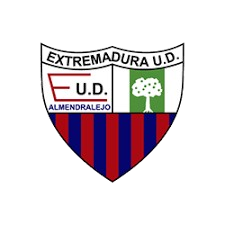

| Indice | Pagina 1 | Estructura de Competiciones |
En esta pagina hay una comparación entre los dos clubes más grandes que han existido historicamente en la región de Extremadura
 |
⬅️Merida C.P. | Simbolo FEXFUT ➡️ | |||||
| ⬅️ Estadio Romano José Fouto | Extremadura | C.D. Badajoz ↘️ | Simbolo FEXFUT ➡️ | ||||
| Extremadura U.D.➡️ |  | ⬅️Estadio Francisco de la Hera |  |
||||
| ⬆Merida C.P. | Desaparecido | Fundado: 2007 | C.D. Badajoz ➡️ | ||||
| Fundado Año: 1912 | Desaparecido: 2022 | Fundado: 1905 | Desaparecido | ||||
| C.P. Mérida | C.F. Extremadura | |
|---|---|---|
| Escudos | |
 |
| Año de Fundación | 1924 | 1912 |
| Año de Desaparición | 2010 | 2000 |
| Maxima División Alcanzada | Primera División (2 Temp) | Primera División (2 Temp) |
| Mejor Temporada | 1997/98: 19º en Primera | 1998/99: 17º en Primera |
| Mejor Resultado en Copa del Rey | 1/4 | 1/8 |
| Titulos | .png) x2, x2,  x3 x3 |
 x1, x3 x1, x3 |
| Jugador Con Más Partidos | José Sinval de Campos (200) | Óscar Montiel Marín (258) |
| Maximo Goleador | Juan Manuel Prieto Velasco (40) | Manuel Alfredo Mosquera Bastida (109) |